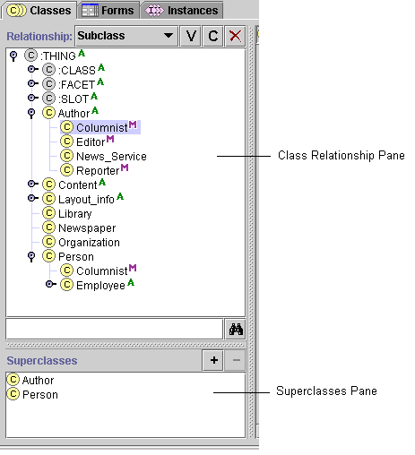

Jumping to Another Superclass
Jumping to Another Superclass

If a class has more than one superclass, you can use the Superclasses
Pane to jump from one superclass to another in the Class
Relationship Pane.
To jump to another superclass:
- Highlight any occurrence of the class in the Class
Relationship Pane.
The superclasses of the class are displayed in the Superclasses
Pane, located immediately below the Class
Relationship Pane.
- Click on any superclass in the Superclasses
Pane.
The highlight in the
Class Relationship pane automatically moves to the occurrence of the class which is
directly under the chosen superclass. If the copy is not currently visible in the
Class Relationship pane, Protégé automatically scrolls to the correct location
and expands the hierarchy to make the class visible.
In the illustration below, if you clicked on Person in the Superclasses
pane, the highlight in the Class Relationship pane would jump to the copy of Columnist
under Person. If the Person hierarchy was not currently expanded,
it would expand to display the Columnist class.

Next: Removing
a Superclass
Classes Table of Contents